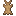
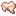
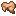
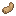

The Jumbo Rabbit is a large rabbit variant added by Earthify.
Jumbo Rabbits are considerably larger and stronger than ordinary rabbits, possessing increased health, stronger attacks and exceptional jumping abilities.
Spawning
Jumbo Rabbits spawn on blocks suitable for rabbits and require bright light levels.
Behavior
- Passive under normal circumstances.
- Can breed with other Jumbo Rabbits.
- Has increased jump strength.
- Can navigate difficult terrain more effectively than normal rabbits.
Combat
Jumbo Rabbits are significantly stronger than ordinary rabbits.
Evil Jumbo Rabbits deal even more damage and use a unique attack sound.
Jumping
Jumbo Rabbits can perform exceptionally high jumps and are capable of traversing steep terrain with ease.
Drops
|
 Rabbit Hide |
2–3 |
|
 Raw Rabbit |
0–1 |
|
 Cooked Rabbit |
0–1 (if killed while on fire) |
|
 Rabbit Foot |
Rare |